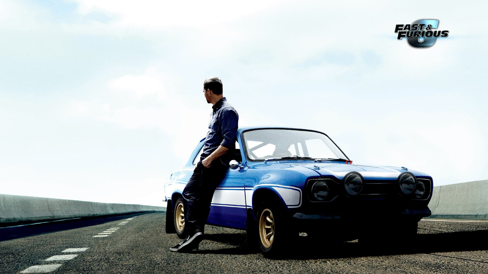

Paul Walker
1973-2013
Ride or Die
Paul Walker(September 12, 1973 – November 30, 2013) was an American actor best known for his role in the "Fast and Furious" franchise. He was a talented performer with a passion for cars and a heart for charity work. Sadly, he passed away in a car crash in 2013 at the age of 40, leaving a legacy of memorable performances and charitable acts. He will always be remembered for his kindness, generosity, and infectious smile.He was a man of deep empathy, always willing to lend a helping hand to those in need, and his legacy of kindness and generosity lives on through his charity.
Facts
- Paul started his small screen career as a toddler, when he starred in a commercial for Pampers in the 1970's.
- Paul was a natural actor and started working in television in 1985 at the age of 11, appearing in " Highway to Heaven ", " Touched by an Angel ", " Throb " and others before moving on to the big screen.
- "Monster in the Closet" was Paul's first movie and was released in 1986.
- Paul was always held in high regard and was close friends with his "Fast and Furious" co-star Tyrese Gibson. Vin Diesel considered Paul to be like a brother, and affectionately called him "Pablo".
- Paul had a brown belt in Brazilian jiu-jitsu.
- Vin Diesel named is daughter "Pauline" in memory of his co-star, friend and brother.
- Paul was known for having a huge heart and always helped people in any way he could.